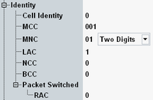

Network Identity
Network "Identity" parameters characterize the radio network simulated by the R&S CMW.

Network identity settings
Identifier of the simulated GSM cell, unique within a location area.
Remote command:Three-digit mobile country code (MCC).
Remote command:Two- or three-digit mobile network code (MNC). The number of digits can be selected in the adjacent field ("Two Digits" or "Three Digits"), irrespective of the GSM band.
Remote command:Specifies the location area code (LAC).
Remote command:Specifies the network color code (NCC).
Remote command:Specifies the base transceiver station color code (BCC). The BCC parameter is also used as training sequence code (TSC).
Remote command:Specifies the routing area code (RAC).
Remote command: